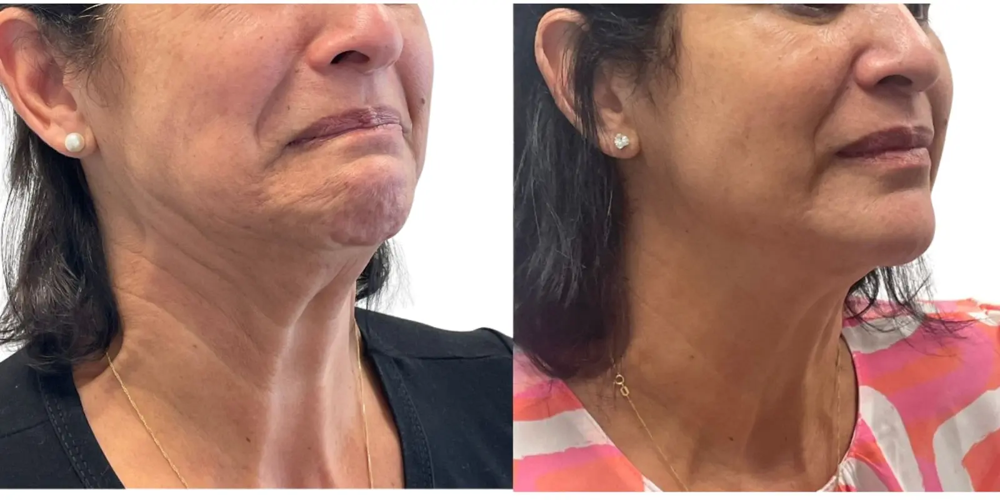

“Tenho volume abaixo do queixo”
Quando predomina gordura superficial, a lipo pode ser uma boa opção. A profundidade do volume também importa.
A “papada” pode vir de gordura, pele solta, músculos, posição do queixo ou da combinação entre eles. A lipo funciona melhor quando o exame confirma gordura localizada e boa capacidade de acomodação da pele.
Dra. Amanda Schroeder · CRM-SP 191605 · RQE 110472 · Membro da SBCP

A queixa orienta a consulta. O exame mostra de onde vem a perda de contorno.
Quando predomina gordura superficial, a lipo pode ser uma boa opção. A profundidade do volume também importa.
Gordura pode apagar a linha mandibular, mas face, músculo e queixo também participam desse desenho.
Nessa situação, retirar gordura pode não resolver e até evidenciar a flacidez. A pele precisa ser examinada.
Você não precisa escolher sozinha. A consulta separa o que a lipo trata do que exige outro caminho.
Quantidade, localização e profundidade ajudam a estimar o que a lipo pode modificar.
Elasticidade e flacidez influenciam quanto a pele tende a se acomodar depois da retirada de gordura.
Bandas e estruturas profundas não são corrigidas por uma lipo superficial.
Projeção e proporção podem aumentar a aparência da papada mesmo com pouca gordura.
É o cenário em que a retirada seletiva de gordura tende a melhorar o ângulo abaixo do queixo.
Lifting cervical, tratamento do queixo, associação ou até não operar podem ser decisões mais coerentes.
Se há pele solta ou “cordas” no pescoço, conheça também o lifting cervical.
Gordura localizada, bandas musculares, qualidade da pele e proporções do queixo pedem soluções diferentes. Os casos abaixo ajudam a visualizar essa diferença.
Deslize para comparar as possibilidades →


Resultados reais com finalidade educativa. Procedimentos cirúrgicos e não cirúrgicos têm indicações, duração e limites diferentes. Não há garantia de resultado semelhante.
A região é examinada de frente, perfil e movimento para evitar uma retirada irregular ou excessiva.
Pequenas incisões permitem trabalhar a gordura; localização e extensão variam conforme a técnica.
Procedimentos adicionais entram no plano apenas se tiverem benefício proporcional e segurança.

Dra. Amanda Schroeder é médica formada pela UNICAMP, com residência em Cirurgia Geral e Cirurgia Plástica, CRM-SP 191605 e RQE 110472. Tem pós-graduação em Cosmiatria pelo Einstein e é membro da Sociedade Brasileira de Cirurgia Plástica.
O planejamento busca melhorar o contorno sem retirar volume indiscriminadamente nem prometer uma definição que a anatomia não permite.
Muitas pacientes se sentem mais à vontade para dizer o que incomoda — e o que não querem transformar — quando são atendidas por outra mulher. Essa identificação vem junto da formação e da segurança.
A avaliação organiza causa, intensidade e alternativas. Às vezes a lipo é adequada; às vezes fazer menos ou escolher outro tratamento é melhor.
Abrir o vídeo diretamenteInchaço, sensibilidade e equimoses são esperados. A faixa compressiva pode ser indicada conforme o caso.
Atividades leves voltam gradualmente. O contorno ainda pode parecer irregular ou endurecido.
O edema diminui e a pele continua se acomodando. Massagens ou fisioterapia são indicadas apenas quando úteis.
O resultado e as pequenas cicatrizes continuam amadurecendo, com retornos programados.


O orçamento só é montado depois de definir o que será feito e em qual estrutura.
“Ela me orientou para uma opção mais adequada, respeitando minhas características e particularidades.”Ana Elisa D’AnnibaleAvaliação pública no Google
“Sempre explica tudo com detalhes e tira todas as dúvidas.”Tais MasciaAvaliação pública no Google
“Ótima formação profissional, coerência, acolhimento e me passa segurança.”Raphaela GarofoAvaliação pública no Google
A Dra. Amanda avalia pele, gordura, platisma, mandíbula, queixo e face. Você recebe uma explicação objetiva das possibilidades, limites, cicatrizes, riscos e recuperação.
Ver horários para avaliaçãoA Clínica LIV Faria Lima reúne consulta, fotografia clínica e organização pré-operatória em Pinheiros.
Conversa sem pressa sobre expectativa e receios.
Perfil, pele e estruturas profundas vistos no conjunto.
Preparo e acompanhamento coordenados conforme o plano.


Um passeio breve pelos ambientes de atendimento na Faria Lima.
Abrir o vídeo diretamenteR. Pais Leme, 215 · cj. 710 · Pinheiros, São Paulo
Próxima à Estação Pinheiros · estacionamento pago no local
A equipe informa horários e orienta como funciona a avaliação.
Entenda quando pele e músculos pedem outra abordagem.
Conhecer a páginaComece pela queixa, sem escolher a técnica sozinha.
Conhecer a avaliaçãoVeja o que compõe o orçamento cirúrgico.
Ler o guia